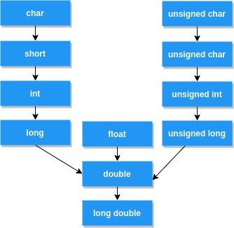

C++建立在C语言的基础上，在系统化学习C++之前，先把本科学的C语言捡起来。
基本数据类型
基本数据类型长度和数据模型有关，有几种常见的数据模型：LP32、ILP32、LP64、ILP64、LLP64。
| 类型 | LP32 | ILP32 | LP64 | ILP64 | LLP64 |
|---|---|---|---|---|---|
| char | 8 | 8 | 8 | 8 | 8 |
| short | 16 | 16 | 16 | 16 | 16 |
| int | 16 | 32 | 32 | 64 | 32 |
| long | 32 | 32 | 64 | 64 | 32 |
| long long | 64 | 64 | 64 | 64 | 64 |
| ptr | 32 | 32 | 64 | 64 | 64 |
char,short,long long,float,double的长度总是固定的，而指针长度往往和平台有关，而int,long长度和数据模型有关。
如今的64位类Unix平台使用LP64数据模型，而Windows使用LLP64（除了指针是64位，其他还是和ILP32一样）
| 类型 | win32 | win64 | unix32 | unix64 |
|---|---|---|---|---|
| char | 1 | 1 | 1 | 1 |
| short | 2 | 2 | 2 | 2 |
| int | 4 | 4 | 4 | 4 |
| long | 4 | 4 | 4 | 8 |
| long long | 8 | 8 | 8 | 8 |
| float | 4 | 4 | 4 | 4 |
| double | 8 | 8 | 8 | 8 |
| long double | 8 | 8 | 12 | 16 |
| 指针 | 4 | 8 | 4 | 8 |
| size_t | 4 | 8 | 4 | 8 |
| bool | 1 | 1 | 1 | 1 |
需要额外留意win64的
long依然是32位的，long long永远是64位的
char，short，int，long可以用unsigned修饰，double和float不行。
指针的几种用法
一般类型的指针
int a1 = 10;
int *p1 = &a1; // 指向int类型的指针
*p1 = 20; // a1 == 20可以通过对
p1解引用修改指向的变量的值。如果去修改指向常量的值则会编译器报warning。常量指针
int a2 = 10;
const int *p2 = &a2; // 常量指针，指向一个const int类型，
*p2 = 20; // 编译出错常量指针，提示编译器指向的变量是一个常量（无论指向目标本身有没有
const修饰），不允许用指针解引用修改这个变量的值，如果修改则直接编译出错。
const int* p2和int const* p2是一个写法int *p2, p3声明了一个int*指针p2和一个int变量p3
指针常量
int a3 = 10, a4 = 20;
int* const p3 = &a3; // 指针常量，不允许再指向其他变量
p3 = &a4; // 编译出错指针常量，必须声明后就指向某个对象，声明后不可以再指向其他变量
指向常量的指针常量
int a5 = 10, a6 = 20;
const int *const p4 = &a5; //指向常量的指针常量，不允许修改指向的值，也不允许指向其他的变量
*p4 = 20; // 编译错误
p4 = &a6;指向常量的指针常量既不允许修改指向的值，也不允许指向其他的变量。
数组
int p5[10]; // 数组
int *p6 = p5;p5是个栈上的数组，可以用其他int类型指针指向它。但是sizeof(p5)为数组占用的比特数（40），sizeof(p6)则是指针占用大小（8）。
例:int func1(char[] str) {
return sizeof(str);
}
int func2(int[] ptr) {
return sizeof(ptr);
}
int main() {
char[] str1 = "123";
printf("%d %d %d\n",func1(str1), sizeof(str1), strlen(str1)); // 8 4 3
int p1[5] = {1,2,3,4,5}; // 8 20
printf("%d %d\n", func2(p1), sizeof(p1));
int p2[] = {1,2,3,4,5}; // 8 20
printf("%d %d\n", func2(p2), sizeof(p2));
char str2[3] = "12345";
printf("%d %d %d\n",func1(str2), sizeof(str2), strlen(str2)); // 8 3 6
int p3[3] = {1,2,3,4,5};
printf("%d %d\n", func2(p3), sizeof(p3)); // 8 12
}
- x64下为例。对形参数组使用
sizeof固定返回8。- 数组声明后的初始化如果超过声明长度会warning，实际分配空间根据声明长度确定。
sizeof返回的也是实际分配空间、即声明长度。也可以写明长度来隐式声明。- 字符串形式定义字符数字需要注意末尾隐式定义了个
\0，实际占用长度需要+1，strlen()返回字符串长度，而sizeof返回字符串长度+1如何记忆几种指针的区别：
[T const | const T | T]* [const | ?]，*前是对被指向对象的约束（能否通过解引用修改指向对象），*后是对指针本身的约束（是否能指向其他对象）
T*：指向T的指针，可以指向其他值，可以通过解引用修改指向的值T const*或const T*：指向const T的指针，目标不可被修改，但可以指向其他值T* const：指向T的指针，目标能修改，但是指针有const修饰符，所以指针不可变，不能指向其他对象T const* const或const T* const，指向const T*且指针本身有const修饰符，目标不能被修改且指针不能指向其他对象
表达式
编译器编译的原则是贪心算法，即：尽可能多的匹配token。
例：int a = 3, b = 4;
int c = a+++b; // 等价于int c = (a++) + b, 优先匹配a++
例：int a = 3, b = 4;
int c = a+++-+-+--n; // 等价于int c = (a++)+(-(+(-(+(--n)))));
类型自动转换
例：int i = -1;
for(; i < sizeof(int), i++) {
printf("%d",i);
}
事实上这段循环根本不会执行，因为有符号数i和无符号值sizeof(int)比较涉及到有符号数与无符号数的减法运算，有符号数参与无符号数的运算会先将有符号数转为无符号数。而-1转为无符号数会远大于4
例：int a = -20;
unsigned int b = 10;
int c = a + b; // a + b是无符数，强行转为有符号数，c=-10
printf("a + b = %u, c = %d\n", a + b, c);
if(a + b > 0) { // a + b是无符号数4294967286>0
printf("a + b > 0");
} else {
printf("a + b <= 0");
}
if(c > 0) {
printf("c > 0")
} else { // c是有符号数-10
printf("c <= 0")
}
// out:
// a + b = 4294967286, c = -10
// a + b > 0
// c <= 0
类型自动转换的原则：
- 参与运算的类型不同，先转换成相同的类型再运算
- 数据类型会向数据增长的方向转换，
char->short->int->long，有符号会向无符号转化 - 所有
float类型的运算都会转换成double再运算，哪怕只有一个float - 浮点数和整数一起运算，统一转换成浮点数运算
char和short类型的值参与运算，无论他们有无符号，结果都自动转为int- 赋值运算时，等号右边的类型向左边的类型转换
- 如果
char或者short与int类型运算，结果有无符号视int有无符号决定

宏
宏替换是编译期过程，不占用运行时间。宏只能在函数外部定义。
- 常量宏替换
- 类型宏定义
函数宏
函数宏名称和参数之间不能有空格，参数和实现之间必须有空格。宏函数必须用括号将所有表达式层层包裹，以防出现运算符优先级的问题。例如：
int a = 1, b = 2;
ABS(a + b);实际上执行的是：
(a + b > 0 ? a + b : - a + b)
这与预期肯定是不一致的。此外如果传入某个函数的执行结果如
ABS(func(a))会两次调用func()，这可能带来性能问题。头文件保护
extern "C" { //强制以C的形式编译
// header content here
}- 内置调试宏
__FILE__：当前文件名__LINE__：当前行号__DATE__：当前日期__TIME__：当前时间
这些宏一般用于调试。
例，用内置宏实现一个日志宏函数：
int main() {
char ip[] = "192.168.0.1";
int n = 200;
LOG("receive %d bytes from server %s", n, ip);
return 0;
}
// May 1 2022 16:36:24][4.c:8] "receive 200 bytes from server 192.168.0.1"
宏的缺点：
- 宏在符号表中不存在，无法打热补丁，在单步调试时无法进入
- 宏会使得程序的代码空间增大
- 宏常量没有数据类型，编译器无法执行类型检查
优点： - 宏函数效率高
- 一些功能只能用宏实现。一些数据要在编译阶段确定，只能用宏。
总结： - 尽量不使用宏函数，除非有性能原因
- 宏定义的名字在一个工程中要保持唯一性，防止不一致。
枚举
例：enum {
Apple = 4,
Banana,
Orange = 5,
Lemon
} fruit;
printf("%d %d %d %d", Apple, Banana, Orange, Lemon, sizeof(fruit)); // 4 5 5 6 4
枚举类型的大小和编译器、编译选项都有关，一般为4或8个字节。建议不要对枚举用sizeof，且对枚举成员赋值不要超过4字节。
- 枚举成员可以指定值，如果不指定，就从前一个有值的成员开始依次递增，如果第一个成员没有指定，默认是0。
- 枚举值可能存在成员值相同的情况（如例子）
- 枚举赋值不要超过4字节。枚举之前不要强行转化。
结构体
字节对齐：现代计算机以字节编址，理论上可以从任何位置取操作数。但是实际上，访问特定类型的变量只能从特定的地址访问内存，这就是字节对齐。
如果期望只从4的倍数的地址取操作数，就是4字节对齐。
例：// 默认4字节对齐
typedef struct {
char str[10]; // size: 10bytes, padding:2 bytes, total 12byes mod 4 == 0
int n; // 4 bytes, no padding
float f; // 4 bytes, no padding
} STRUCT_DEMO; // total 12 + 4 + 4 = 20 bytes
int main() {
STRUCT_DEMO demo = {"Heng", 1919810, 114.514};
printf("%u %u %u %u",sizeof(demo), &demo.str, &demo.n, &demo.f);
return 0;
}
//20 8313680 8313692 8313696
可以用#pragma pack(n)来声明n字节对齐
字节对齐的原因：
运行速度更快
struct {
char ch;
double n;
} st_1;
printf("%f", st_1.n)
struct {
char ch;
double n;
} st_2;
printf("%f", st_2.n)st_1和st_2分别使用1字节对齐和4字节对齐，且有着相同的格式。在x64下一次取操作数最多取8字节，访问st_1.n需要取2次数，而访问st_2.n只要取一次数。如果不字节对齐，指针从基地址读取数据也许会出错，结构体赋值也可能会出错。
typedef struct {
char ch1;
char ch2;
int n;
} STRUCT_DEMO;
int main() {
STRUCT_DEMO st = {'a','b',1};
printf("%d\n", sizeof(st)); // 6
int n1 = *(int*)(&st.ch1);
printf("%d\n", n1);
int n2 = *(int*)(&st.ch2); // might crash: data abort exception
printf("%d\n", n2);
return 0;
}例如1字节对齐时从
st.ch2处访问数据违反了对齐规则（地址非4的倍数），部分CPU和编译器可能触发data abort exception
访问数据违反了对齐规则是否出错主要取决于CPU和编译器
- 结构体赋值字节不对齐可能会出错部分CPU，执行结构体赋值指令使用的是STM/LDM之类的块拷贝指令，而块拷贝指令要求基址必须满足4字节对齐，否则就会导致数据读取异常。
typedef struct {
char ch1;
char ch2;
char ch3;
} STRUCT_DEMO;
int main() {
STRUCT_DEMO demo;
char *p = (char*)malloc(sizeof(char) * 10);
p++; // p指向位置不满足对齐
demo = *((STRUCT_DEMO*)p); // might crash
return 0;
}
如何设置字节对齐：
- 自然对齐：调整结构体成员变量的申明顺序，按照8,4,2,1字节的顺序排列。不够对其的字段用保留字段填充至对齐
- 使用预编译选项
#pragma pack(n)让编译器自动对齐 - 不对齐结构不用非同类型指针访问，不进行类型转换
- 尽量不对结构体直接赋值，使用
memcpy拷贝结构体
结构体大小计算// 4 字节对齐
typedef struct { // size = 6
char a;
short b;
short c;
} DEMO_1;
typedef struct { // sizeof = 12
int a;
DEMO_1 b;
} DEMO_2;
typedef struct { // sizeof = 8
int a;
short b;
} DEMO_3;
typedef struct { // sizeof = 0 (c) or 1 (c++)
} DEMO_4;
int main() {
DEMO_1 d1;
DEMO_2 d2;
DEMO_3 d3;
DEMO_4 d4;
printf("%d %d %d %d", sizeof(d1), sizeof(d2), sizeof(d3), sizeof(d4));
return 0;
}
// gcc compile output:
// 6 12 8 0
// g++ compile output:
// 6 12 8 1
关于对齐的几个基本概念：
- 数据类型自身的对齐值：
char为1，short为2，float为4，int通常为4 - 结构体/类的自身对齐值：其成员中自身对齐值最大的值
- 制定对齐值：
#pragma pack(n)指定n字节对齐 - 数据成员，结构体有效对齐值：自身对齐值和指定对其值去较小的
结构体对其原则：
- 每个成员分别按有效对齐值对齐，起始地址 % 有效对齐值 = 0
- 结构体默认对齐方式是它最长的成员的对齐方式，起始地址 % 最大成员有效对齐值 = 0
- 结构体对齐后的长度必须是成员中有效对齐值的整数倍
联合体
联合体的大小是最大的成员的大小，所有成员共享联合体空间。
|
x86下大端的存储结构如下：
| 0 | 1 | 2 | 3 | |
|---|---|---|---|---|
| u1.a | 0x78 | 0x56 | 0x34 | 0x12 |
| u1.b | 0x78 | 0x56 | 0x34 | 0x12 |
函数
指向函数的指针
例：char a[] = {'a','b','c'}; //末尾没有空白符
char b[] = "abc"; //末尾有空白符，等价于{'a','b','c','\0'}
printf("%d %d %d %d",sizeof(a), strlen(a), sizeof(b), strlen(b));
// 3 6 4 3
函数指针
typedef int (*PFUN)(float, int, char*); // 定义函数指针 |
inline函数
inline函数用于建议编译器展开对改函数的调用，从而没有函数调用调用的开销。不同于宏函数，内联函数是真正的函数，编译器会检察参数类型，消除宏函数的隐患。内联函数和宏函数一样可能会导致代码空间膨胀。
inline只是对编译器的建议，对内联函数是否展开由编译器决定。内联函数不宜太长，而且必须在头文件中定义。
例:inline int abs(int n) {
return n > 0 ? n : -n;
}
extern函数
- extern`关键字置于变量和函数之前，表示变量和函数定义在别的文件中，提示编译器去其他模块寻找该变量和函数的定义。
extern关键字可以用于替代#include来声明函数extern "C"：C++在解决函数多态问题时，会将函数名和参数联合起来生成一个中间函数名，而C语言不会，因此会造成链接时找不到对应函数的情况
例：//main.c
extern int sum(int, int);
int main() {
int s = sum(114, 514);
printf("sum=%d\n", s);
return 0;
}// sum.c
int sum(int a, int b) {
return a + b;
}gcc main.c sum.c -o main编译成功，输出628
static函数
static函数只能被同文件和包含其的文件的函数调用。
例：//main.c
extern int sum(int, int);
int main() {
int s = sum(114, 514);
printf("sum=%d\n", s);
return 0;
}// sum.c
static int sum(int a, int b) {
return a + b;
}gcc main.c sum.c -o main编译失败，找不到sum的引用：/usr/bin/ld: /tmp/ccLduJ3g.o: in function `main':
main.c:(.text+0x13): undefined reference to `sum'
collect2: error: ld returned 1 exit status
解决办法：改用#include引入sum或者取消static
字符串和指针
函数形参数组和指针互换
void func1(char *str) { |
char str[]，char* str，char str[n]作为形参本质上都是char *
使用sizeof时，数组和指针定义不可互换
char *str1 = "hello world"; |
指针使用sizeof永远返回指针大小，数组则返回数组大小
数组和指针在表达式取值中有相同的本质
char* str1 = "Hello World"; |
数组头可以看作是指针，指针可以看作数组头，都可用下标访问和步长解引用获取变量值。str[3]会被编译器编译成*(str + 3)
多维数组的步长
char a1[10]; // step 1 |
char a3[10][3]中(a3 + 1)指向a3[10][0]
内存布局
char* str1() { |
str1()和str2()的字符串分配在栈上，内容随着函数返回被销毁，所以无法正确返回数据。
str3()，str4()，str5()可以正确返回结果，str3()
int n; |
| segment | 段名 | 内容 |
|---|---|---|
| BSS | BSS段 | 存放程序中未初始化的全局变量，不占用执行程序大小，其内容由操作系统初始化（赋0） |
| data | 数据段 | 存放程序中已初始化的全局变量 |
| code | 代码段 | 存放程序执行代码的内存区域，大小在程序运行前已经确定，而且通常属于只读 |
| heap | 堆 | 存放进程运行中被动态分配的内存段，大小并不固定，可动态扩张或缩减，malloc分配的是堆上内存 |
| stack | 栈 | 用户存放程序临时创建的局部变量（但不包括static声明的变量）。在函数被调用时，其参数也会被压入发起调用的进程栈 |
TODO::用objdump -s分析二进制
常见的坑
变量的定义与声明
int a = 0; //定义，声明了类型、名称，同时分配空间和初始化 |
extern int a; //声明，变量在其他地方 |
变量申明仅表明对象的类型和名称，而定义还会给变量分配空间和初始化值，定义也是声明。声明可以有多次，定义只能有一次。
switch
switch(variable)变量只能是char，int类型，case总常量值不能重复。分支语句块如果重复可以改为：switch(variable) {
case VAR1:
case VAR2: {
// do something...
}
}
不能返回栈上值的引用
string& shorter(string& s1, string& s2) { |
当函数执行完后，栈上对象会被析构。返回引用类型时，不能返回栈上对象的引用。
对象生命周期
string s = "HelloWorld"; |
参考资料: